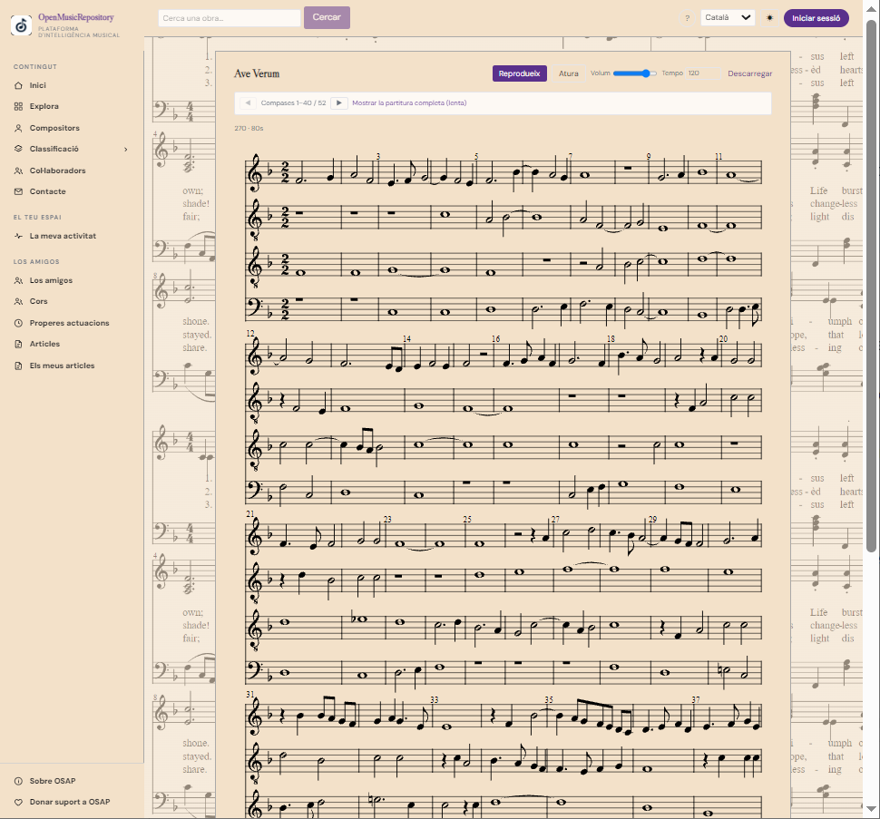
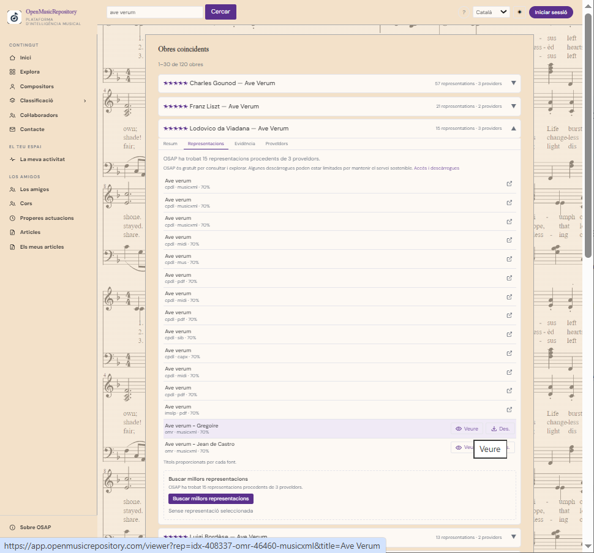

Estudio de búsqueda
Permite refinar una búsqueda musical mediante criterios de clasificación, como instrumentación o formación vocal, cuando estén disponibles.
Guía de uso
Encuentra obras, compositores y recursos musicales con la búsqueda principal, los filtros avanzados y las herramientas de exploración.
En la página de inicio puedes escribir el título de una obra o el nombre de un compositor en el cuadro principal. Si conoces solo parte del título, prueba con las palabras más distintivas. Abre un resultado para consultar sus detalles y las versiones disponibles.
La búsqueda avanzada permite separar criterios para acotar el resultado:
| Campo | Qué introducir | Consejo |
|---|---|---|
| Compositor | Nombre o apellido de la persona autora. | Prueba variantes del nombre si no aparece. |
| Título | Nombre de la obra o una parte reconocible. | Omite al principio subtítulos largos o signos. |
| Catálogo | Una referencia como BWV, KV/Köchel, Hoboken u otra numeración temática. | Introduce la sigla y el número tal como lo conozcas. |
Los campos pueden combinarse para reducir los resultados. Si no encuentras la obra, elimina filtros y vuelve a probar con menos datos.
La sección Explorar reúne distintas maneras de recorrer el catálogo. Desde allí puedes acceder al catálogo de fuentes y a la lista de fuentes, además de las herramientas de búsqueda más detallada.
Permite refinar una búsqueda musical mediante criterios de clasificación, como instrumentación o formación vocal, cuando estén disponibles.
Muestra el estado y las capacidades de las fuentes conectadas. Que una fuente aparezca no garantiza que esté disponible en todo momento.
Busca personas por nombre y abre su ficha para consultar información biográfica, referencias y obras relacionadas.
Cuando hayas localizado una obra, revisa las representaciones que OSAP relaciona con ella. Según la fuente, puede haber recursos en MusicXML/MXL u otros formatos. La disponibilidad de un formato no implica que todas las versiones tengan las mismas opciones.


Un resultado puede agrupar varias representaciones de una misma obra procedentes de diferentes proveedores. El nivel de confianza es una estimación de la identificación realizada por OSAP; no significa necesariamente que todos los proveedores hayan confirmado explícitamente que se trata de la misma obra. Si hay varias coincidencias posibles, consulta sus títulos, compositores, fuentes y evidencias antes de elegir.